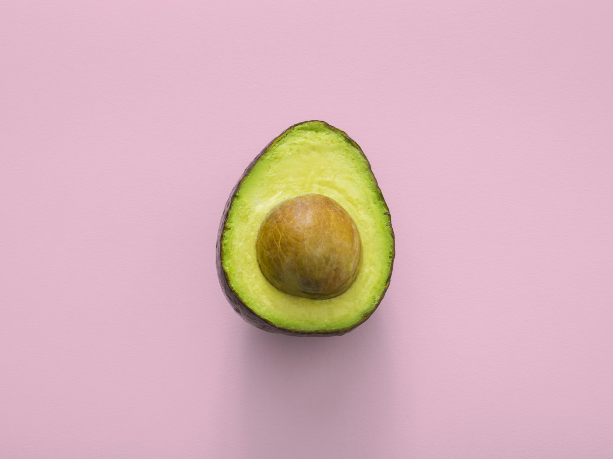
OrganicFruit
Organic Avocados
$4.99 $6.49
Seasonal produce, wholesome pantry staples and farm-fresh dairy chosen with care, packed responsibly and delivered at their best.
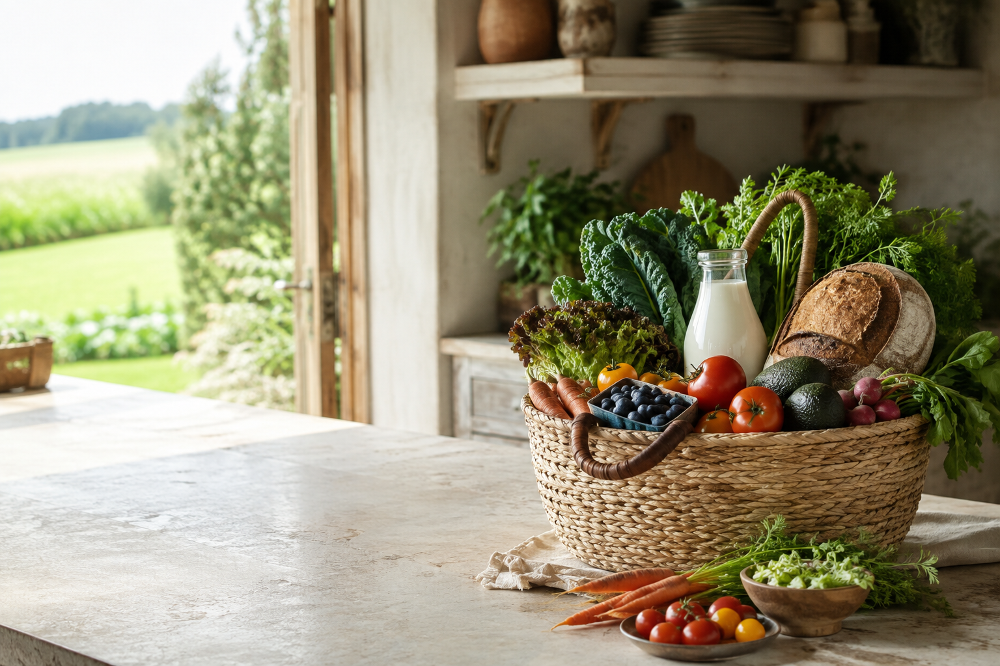
Good food for every corner of your kitchen.
Reliable staples and seasonal favourites chosen by our community.

Organic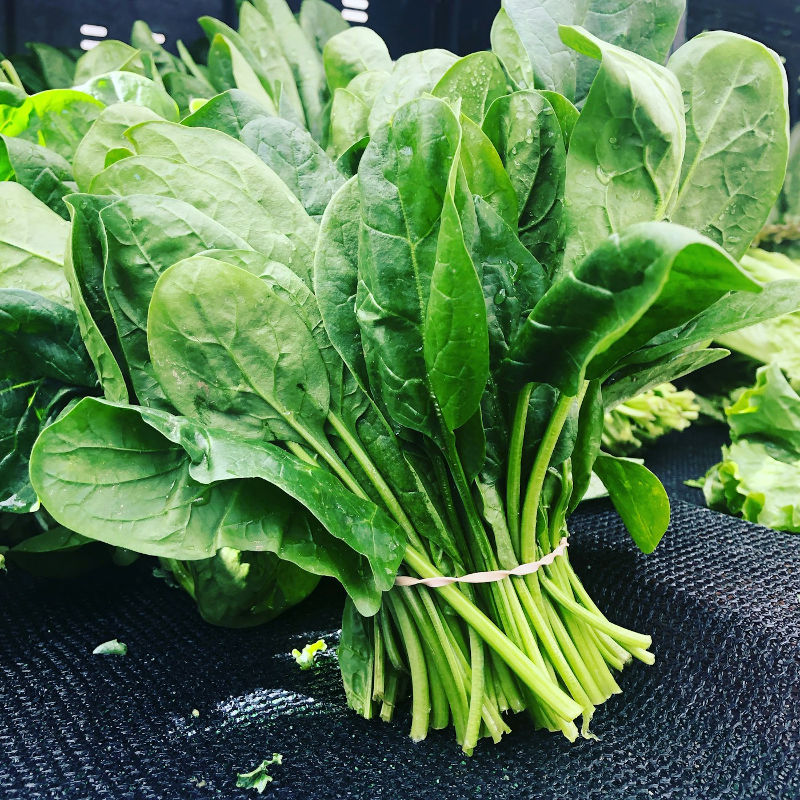
Organic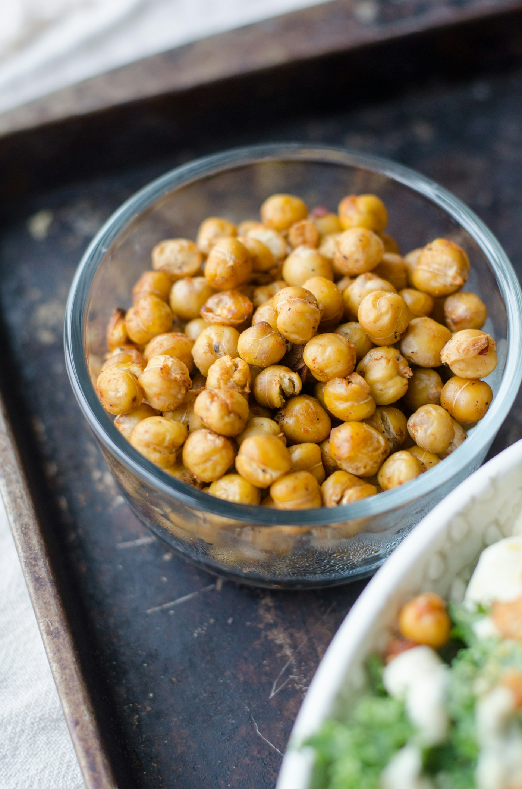
Organic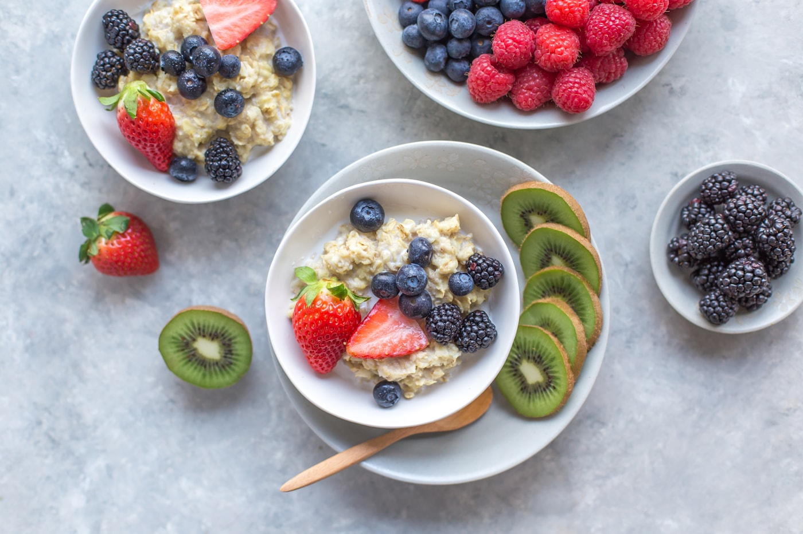
Organic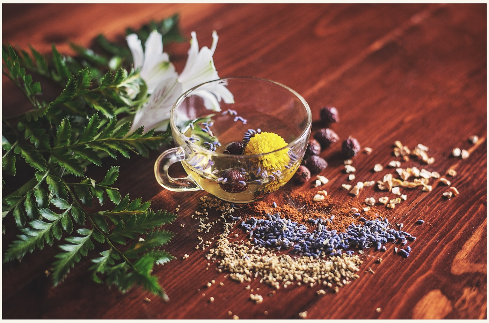
Organic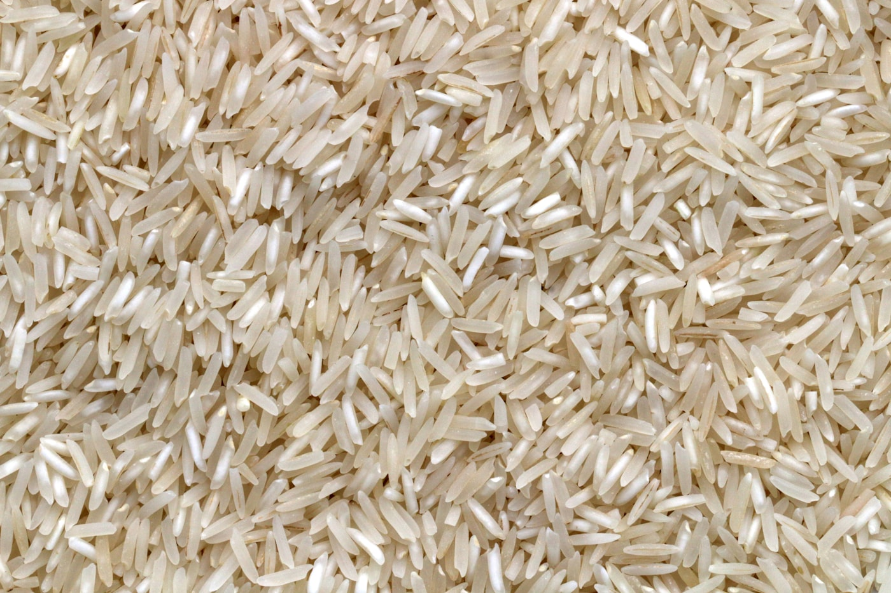
Organic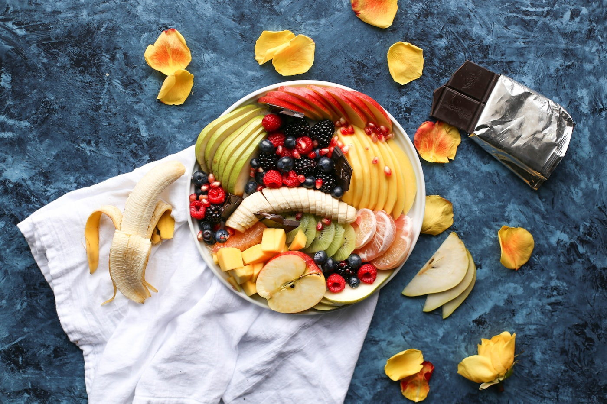
Organic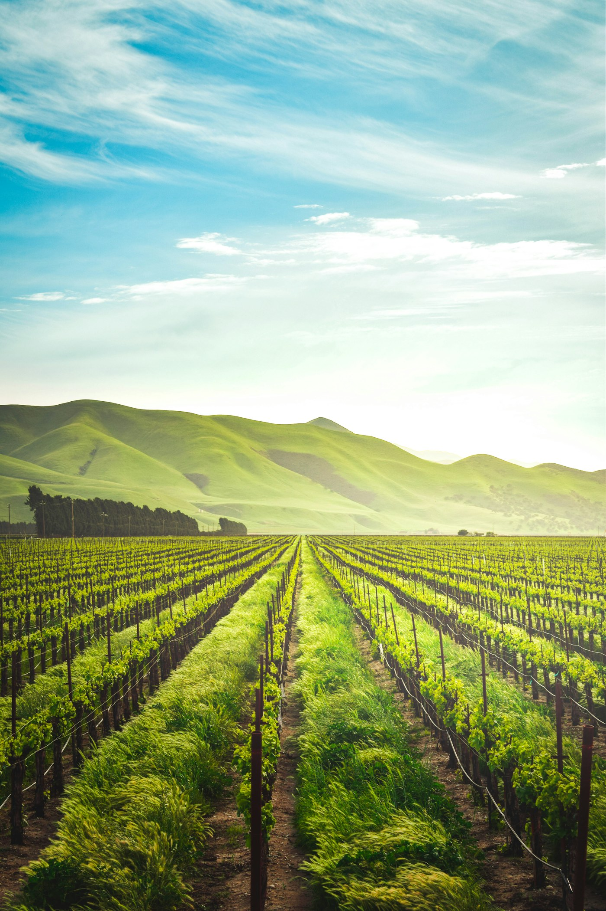
We work directly with trusted farms that protect soil health and harvest to order. Shorter journeys mean fresher food and a fairer return for growers.
A vibrant edit of what local fields are giving us now.
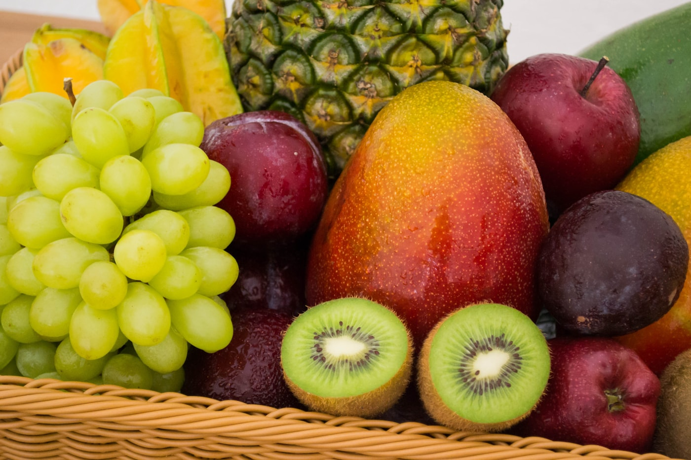
Peaches, berries and plums at peak sweetness.
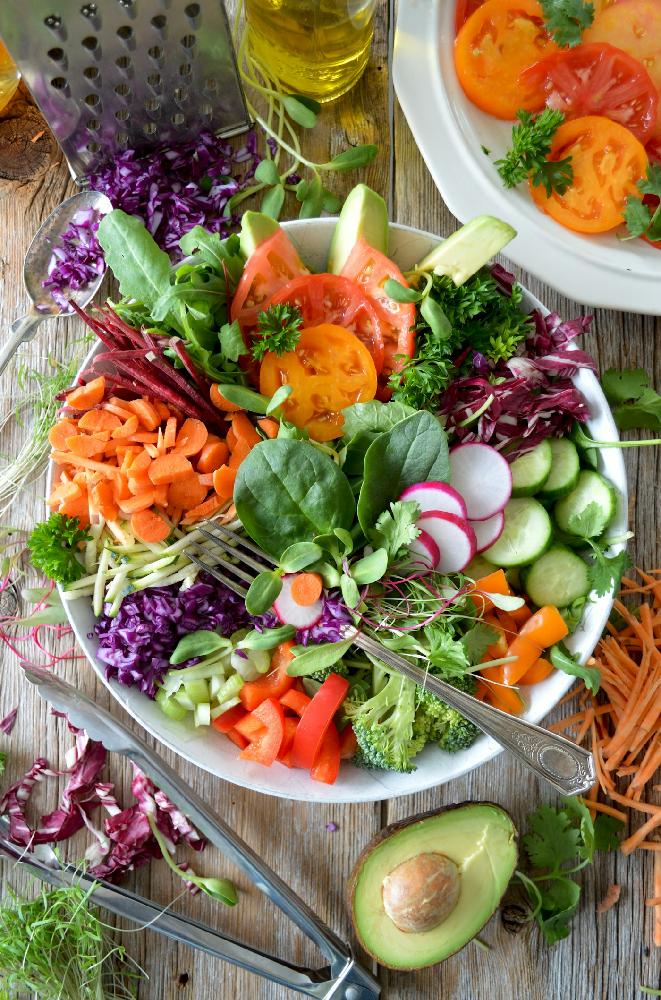
Tender greens harvested twice weekly.
Good decisions should be easy to see.
Practical standards, checked carefully and explained clearly.
Practical standards, checked carefully and explained clearly.
Practical standards, checked carefully and explained clearly.
Practical standards, checked carefully and explained clearly.
Choose a Vegetable Box, Family Box or Healthy Pantry Box, then pause, skip or switch your schedule whenever life changes.
Explore Subscriptions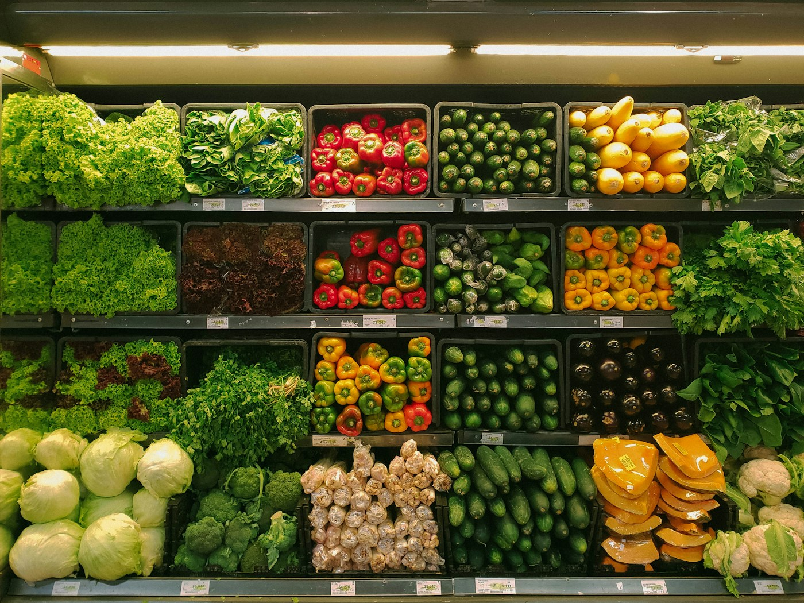
Real notes from families who eat with the seasons.
Everything arrives fresh, neatly packed and noticeably better than supermarket produce. The weekly box has made seasonal cooking feel effortless.
The sourcing notes make it easy to understand where our food comes from. Quality has stayed excellent, even during busy delivery weeks.
Beautiful produce, sensible packaging and genuinely helpful support. It feels like shopping at a trusted neighborhood market from home.
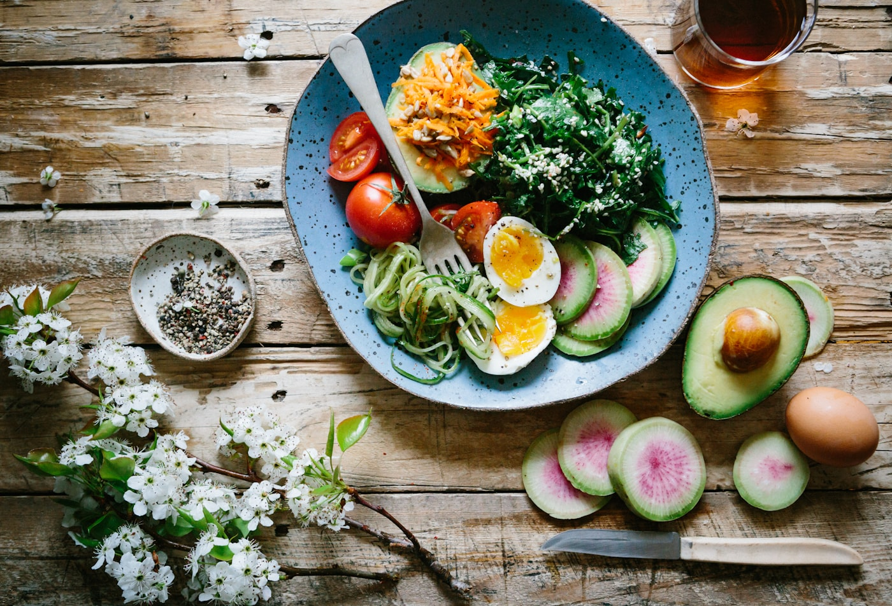
Simple, practical ideas for eating well and living closer to the seasons.
Read MoreSimple, practical ideas for eating well and living closer to the seasons.
Read More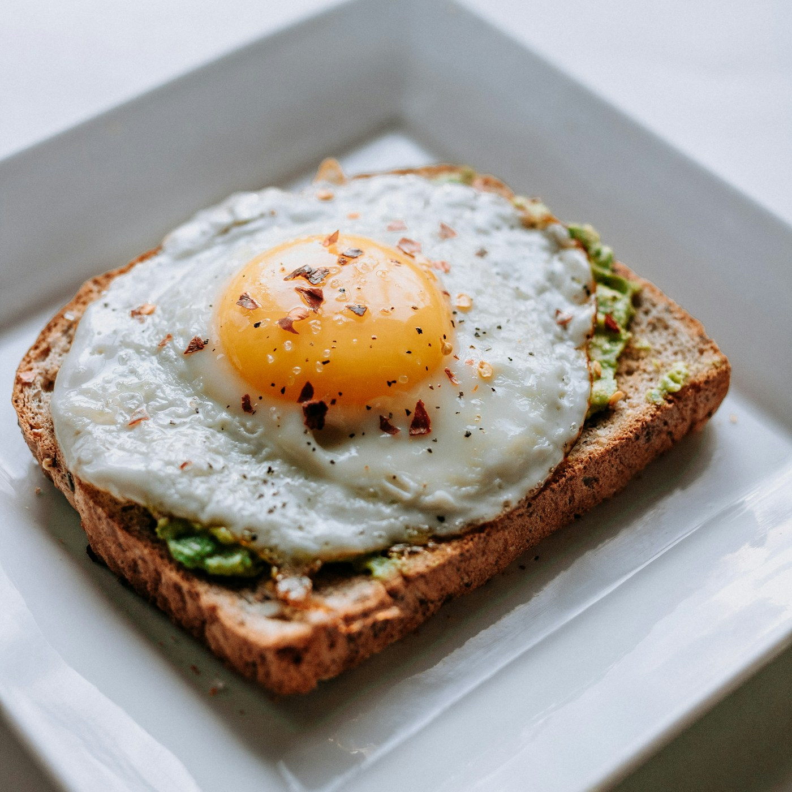
Simple, practical ideas for eating well and living closer to the seasons.
Read More